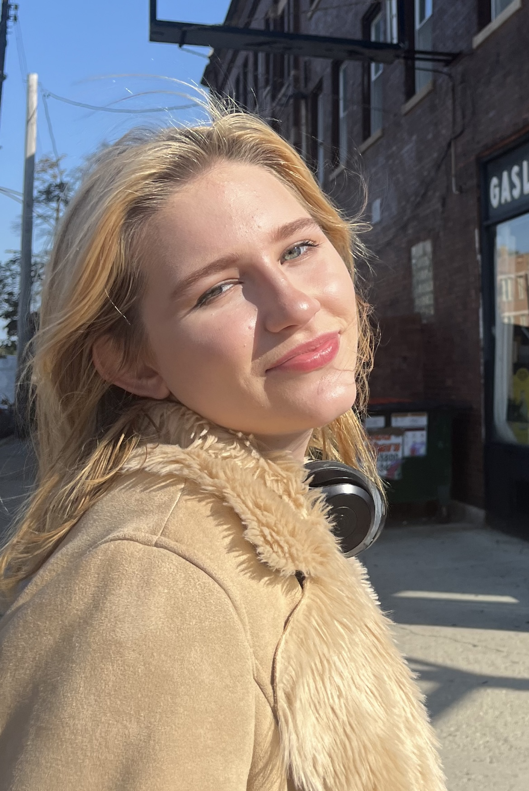

I carry the portrait-painting process into my writing by focusing on human-centered stories and interviewing. An ideal work of writing for me would help the audience learn from another person, but also tackle some kind of social issue people may be confused about. I've covered community health care workers, college students who feel isolated by social media, young voters supporting Mamdani, and Rock music analyses.
This year, I hope to paint portraits that have conceptual elements and surprise people, cover how immigration policies and censorship effect college professors, code my own adventure, and write some imagery-based poems.